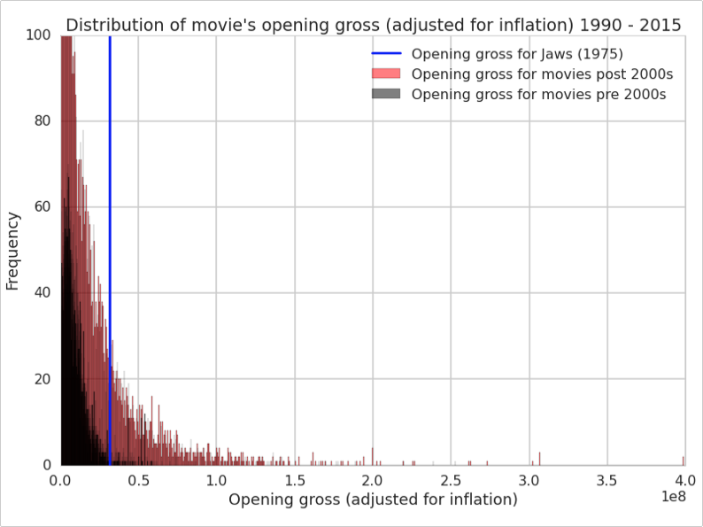
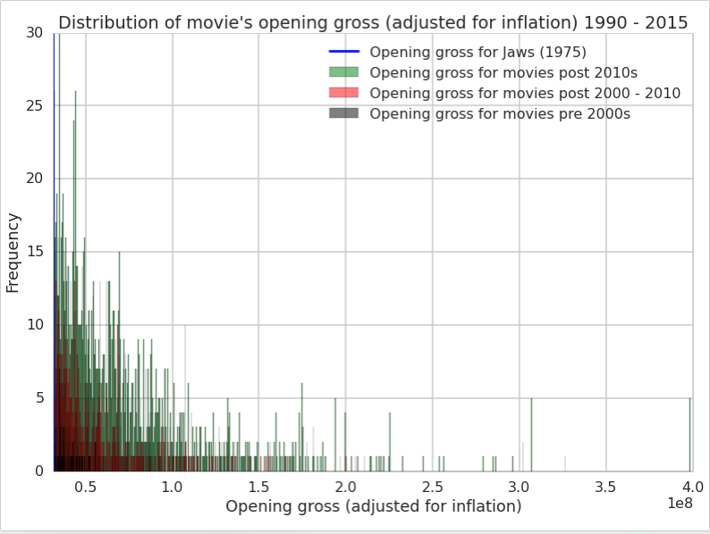

Results
In this project, we were interested in to what extent we would predict opening gross for all movies released since 1990 recorded on Box Office Mojo with reviews information from IMDB. We also wanted to see to what extent we could successfully classify movies as Blockbuster or not. This is defined as grossing above 100M, as critics called Jaws the first Blockbuster because it was the first movie to gross above 100M. Lastly, throughout this entire process, we were also interested in seeing what new insights we could uncover about the movie industry. We shall share these with you below.
Insights about Movie Industry
Even after adjusting for inflation, we learned that there has been more block busters in recent years (after 2000) than from 1990-2000. We defined a block buster as a movie that made more money after inflation than Jaws (1975).
 
We also discovered that until 2005, the number of theaters for movies had been increasing, at which point it started to plateau.

Predicting Movie Grossing
We used many different methods to see how we can best predict opening-gross of movies given the information that we have. The features that we will use are the following:
- The number of theaters opening the film and the number of theater showing the film in total
- The average valence scored from LabMT, the variance of this score and the absolute deviation of this valence from the mean
- The average percentage of reviews of a given movie that have corresponding valence scores in LabMT
- The valence of topic 1 and 0 as derived from our bag of words analysis and the maximum valence for these topics across all reviews for a given movie
Here, we have also chosen not to predict movie grossings but specifically predict their opening weekend grossings because different movies are in theaters for different amounts of time, and we do not always know how long they are on show and thus we cannot correctly control for this variable.
We split the dataset into training and testing, training our regressors on the former and seeing how well they perform on the latter. The six regressors that we use are as follows:
- Logistic regressor
- Support Vector Machine regressor
- Decision tree regressor
- AdaBoost regressor
- GradientBooster regressor
- Random Forest regressor
Here, we have also chosen not to predict movie grossings but specifically predict their opening weekend grossings because different movies are in theaters for different amounts of time, and we do not always know how long they are on show and thus we cannot correctly control for this variable.
Through regression, we found that the most successful predictor is random forest, which has the highest accuracy scores on both the test and training datasets.
Classifying movies as Blockbuster or not
We are also interested in classifying whether movies are blockbusters or not, which is defined as having a grossing of over 100M, a Blockbuster.
We first train our classifiers on two variables, our average valence scores for topic 1 and topic 0 from our bag of words analysis. The different classifiers that we use are the following:
- Logistic classifier
- Support Vector Machine classifier
- Decision tree classifier
- AdaBoost classifier
- GradientBooster classifier
We find that the predictive powers of these are very poor. This can be seen in the ROC curve below and poor contour plots below.
We will also train classifiers on two other variables, namely average valence from LabMT and number of theaters showing film and compare the this with the prediction from the previous set of two variables. An example of a contour plot can be seen below.
We see that all the classifiers have very similar accuracy scores so it is difficult to differentiate between which classifiers perform better. These two features have more predictive power than the previous two, which comes mostly from the feature for number of theaters. LabMT valence score lends very little predictive power.
Lastly, we will train classifiers on a larger list of variables similar what we did for regression. For example, this will include other valence scores we've calculated using the LabMT dictionary, the variance of valence scores across reviews for a given movie and etc. In addition, we will be using Tree classifiers.
Here, we again do not see a significant different between the classifiers. They are all quite accurate.